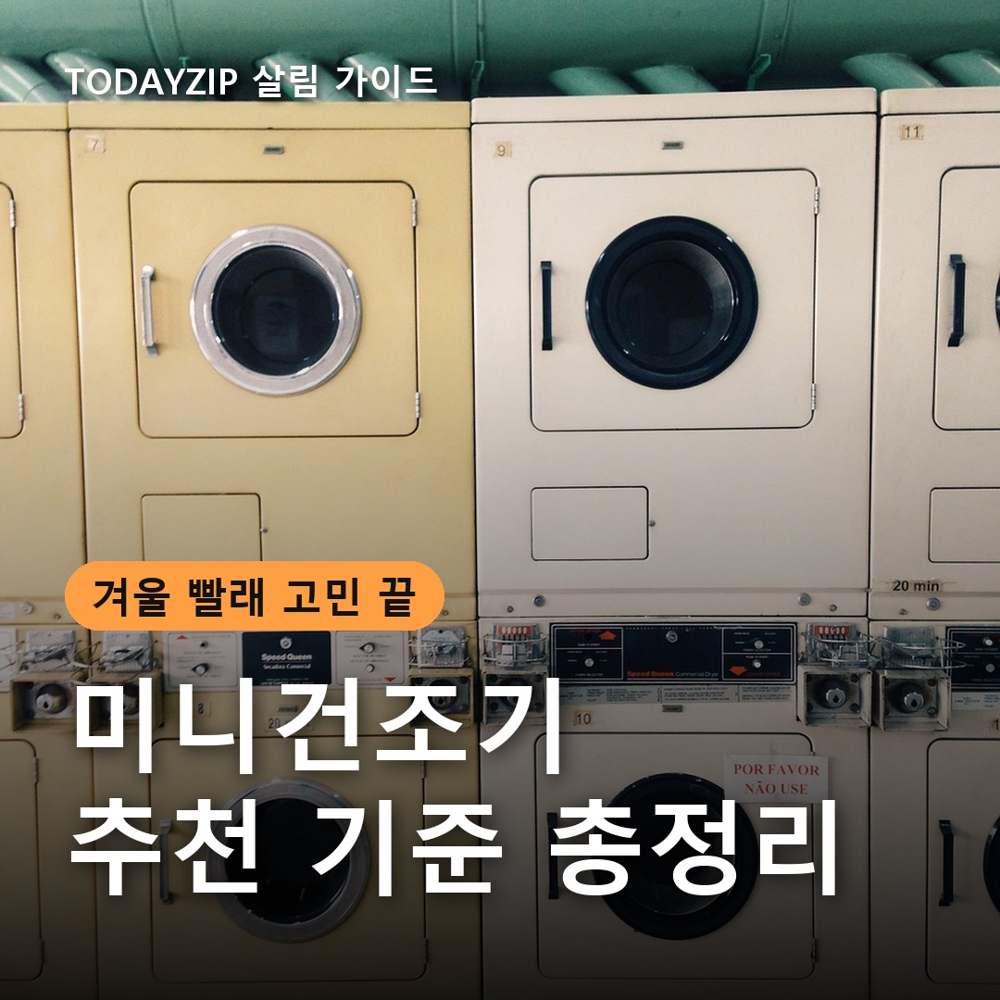
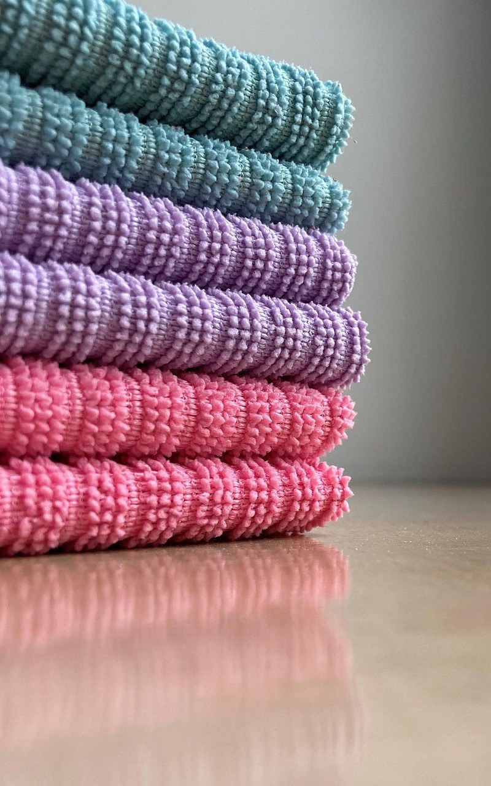
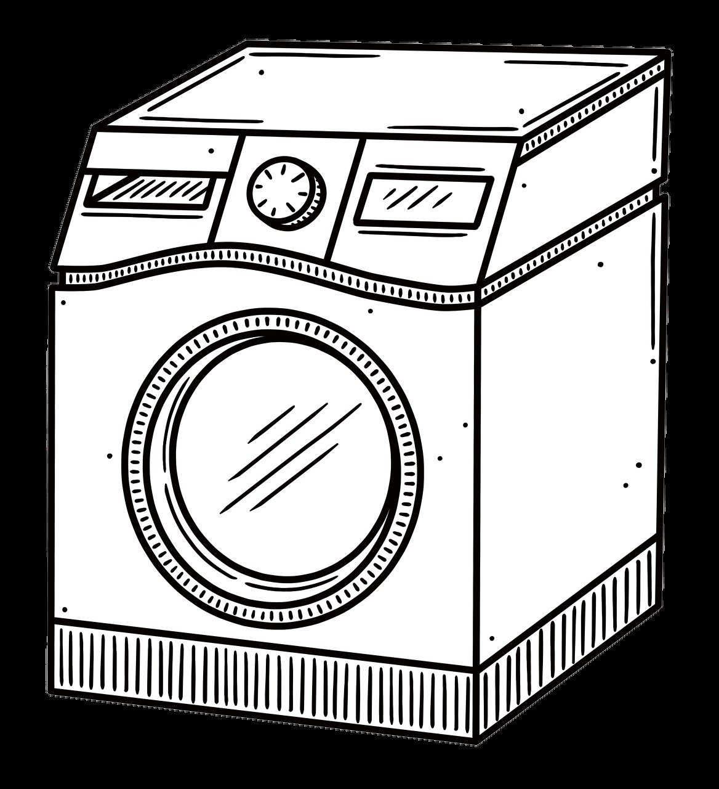
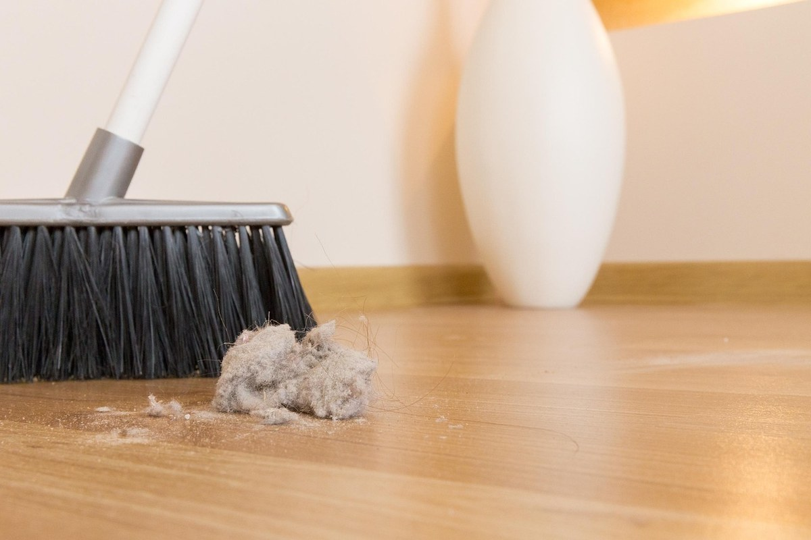

이 포스팅은 쿠팡 파트너스 활동의 일환으로, 이에 따른 일정액의 수수료를 제공받습니다.
[사진 1: 썸네일]
11월만 되면 빨래가 이틀이 지나도 눅눅하지 않나요? 실내에 널어 둔 수건에서 냄새가 나기 시작하면, 큰 건조기는 자리가 없고 미니건조기라도 들일까 고민하게 돼요.
미니건조기 추천 글을 찾아보면 제품 이름만 가득해서 오히려 헷갈려요. 이 글에서는 브랜드 대신 용량, 히터식과 히트펌프식 차이, 설치 자리, 전기요금 확인법까지 고르는 기준만 차례로 정리해 드릴게요.
[사진 2]
📷 [직접 찍은 사진 넣기: 수건 10장을 개어 한 줄로 쌓아 본 모습]
미니건조기는 대부분 3kg 안팎이에요. 3kg이면 수건 10~15장, 셔츠 5~6장 정도가 한 번에 넣기 좋은 양으로 안내되는 경우가 많아요. 이불이나 두꺼운 패딩은 큰 건조기나 빨래방이 맞아요.
그래서 1~2인 가구가 수건·속옷·아기옷처럼 작은 빨래를 자주 말리는 용도로 보면 실망이 적어요. 우리 집 빨래가 하루에 얼마나 나오는지부터 떠올려 보세요.
✍️ [내 경험 한두 줄: 우리 집은 수건·속옷 빨래가 며칠에 한 번, 몇 장쯤 나오나요?]
미니건조기를 고를 때 가장 먼저 갈리는 게 말리는 방식이에요. 다나와리서치 자료에 따르면 10kg 이하 미니건조기 판매에서 히트펌프식이 69%, 히터식이 31%였다고 해요.
| 구분 | 히터식 | 히트펌프식 |
|---|---|---|
| 말리는 방법 | 전기 히터로 뜨거운 바람 | 냉매로 습기를 모으며 비교적 낮은 온도 |
| 전기 사용 | 많은 편 | 적은 편 |
| 옷감 부담 | 온도가 높아 줄어듦 주의 | 상대적으로 적은 편 |
| 가격 | 낮은 편 | 높은 편 |
| 이런 집에 | 가끔 쓰고 가격이 중요할 때 | 매일 쓰고 전기요금이 신경 쓰일 때 |
[사진 3]
📷 [직접 찍은 사진 넣기: 미니건조기를 둘 자리를 줄자로 재는 모습]
미니건조기는 작아 보여도 문을 여는 공간과 뒤쪽 통풍 공간이 따로 필요해요. 습한 공기를 어떻게 처리하는지도 제품마다 달라서, 배기 호스를 연결해야 하는지 물통에 물을 모으는지 설명서로 꼭 확인하세요.
✍️ [내 경험 한두 줄: 미니건조기를 둔다면 어디에 둘 생각인가요? (세탁실/욕실 앞/베란다/방 한쪽)]
"전기 적게 먹어요"라는 말보다 상세페이지의 에너지소비효율 등급과 연간 소비전력량(kWh)을 보는 게 정확해요. 같은 용량끼리 이 숫자를 나란히 놓고 비교하면 차이가 보여요.
건조 시간도 같이 보세요. 1회 건조에 걸리는 시간이 길면 그만큼 소음이 나는 시간도 길어지니, 원룸이라면 소음 수치(dB)가 적혀 있는지도 확인하면 좋아요.
[사진 4]
건조기는 돌릴 때마다 먼지 필터에 보풀이 쌓여요. 필터를 매번 털어 줘야 바람이 잘 통하고 건조 시간도 늘어나지 않아요.
필터를 꺼내기 쉬운 위치인지, 물을 모으는 방식이라면 물통을 비우기 편한지 사기 전에 사진으로 확인해 두세요. 관리가 귀찮으면 결국 잘 안 쓰게 돼요.
Q. 미니건조기로 이불도 말릴 수 있나요?
A. 3kg 안팎 제품은 이불처럼 부피가 큰 빨래는 맞지 않아요. 얇은 담요 정도도 설명서의 권장 양을 먼저 확인하세요.
Q. 미니건조기를 욕실 안에 둬도 되나요?
A. 물이 튀거나 습기가 많은 곳은 피하라고 안내하는 제품이 많아요. 설치 장소 조건을 설명서에서 꼭 확인하세요.
정리하면, 가끔 쓰고 가격이 중요하면 히터식, 매일 돌리고 전기요금이 신경 쓰이면 히트펌프식부터 비교해 보세요. 어떤 미니건조기 추천 제품이든 놓을 자리 크기와 배기·물통 방식을 먼저 확인하는 게 가장 중요해요.
여러분은 겨울 빨래를 어떻게 말리고 계신가요? 실내 건조 팁이나 고민이 있다면 댓글로 나눠 주세요.
인스타그램 @todayzip.info 에서 살림 꿀팁을 30초 영상으로도 볼 수 있어요.
이 포스팅은 쿠팡 파트너스 활동의 일환으로, 이에 따른 일정액의 수수료를 제공받습니다.